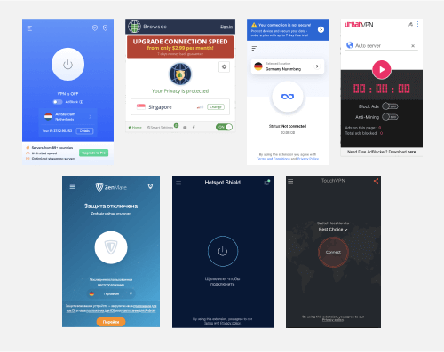
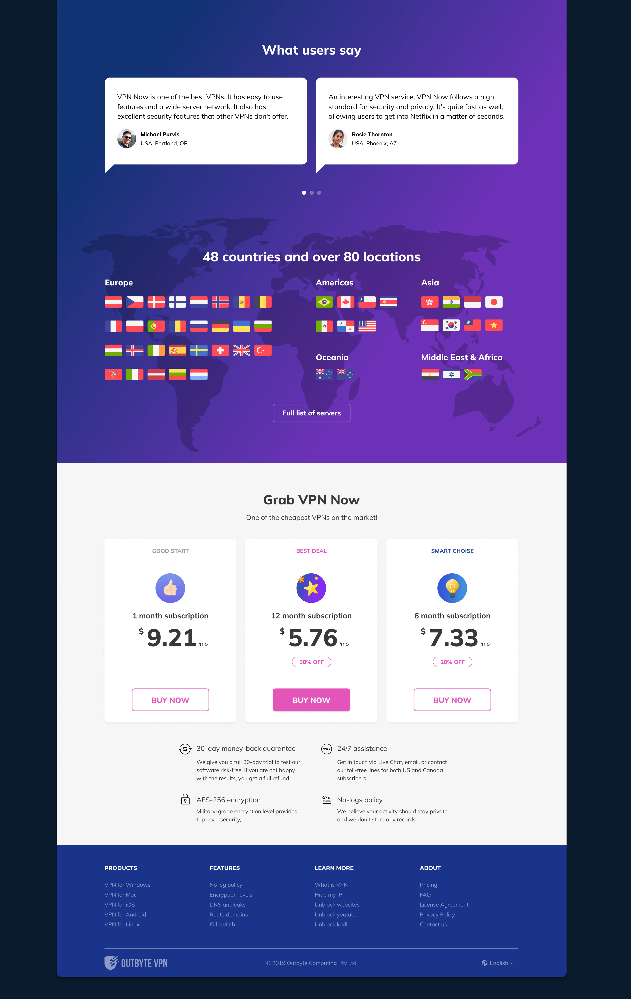
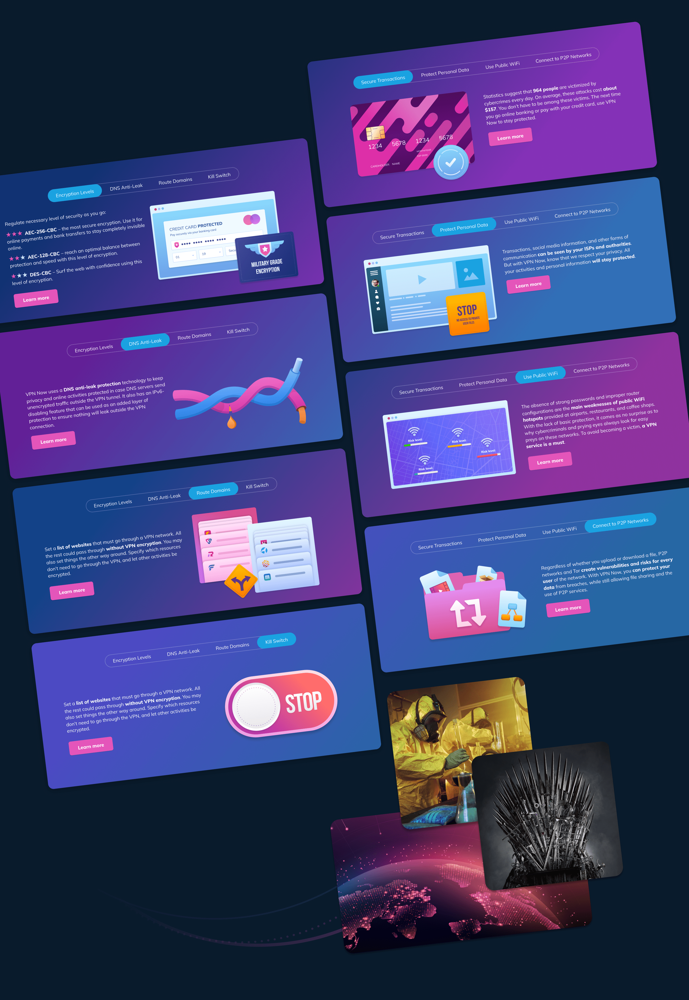
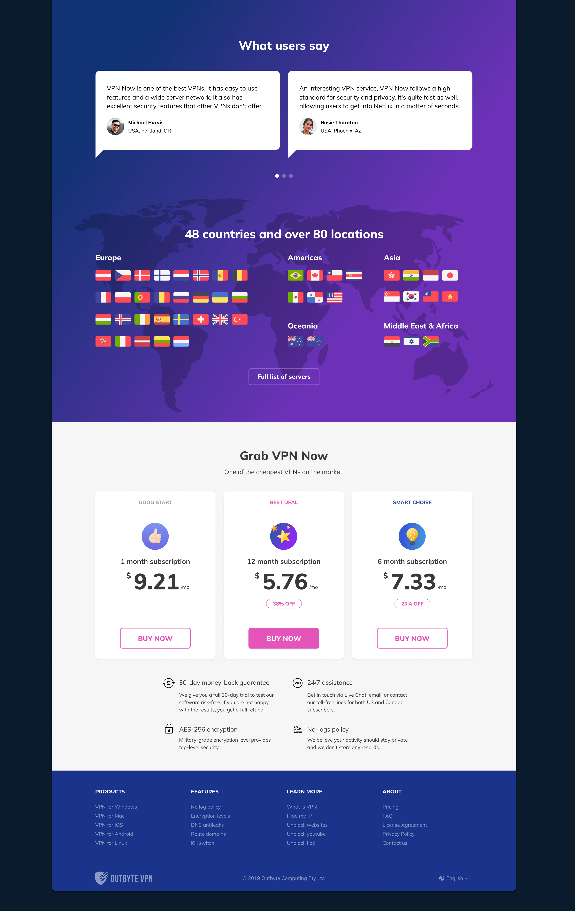
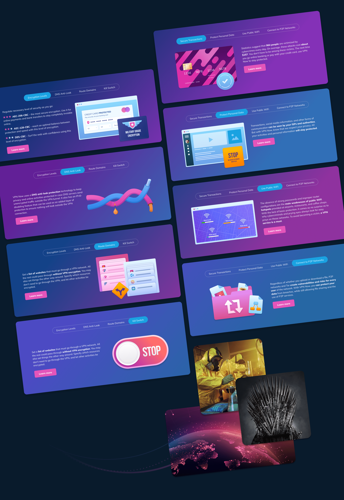
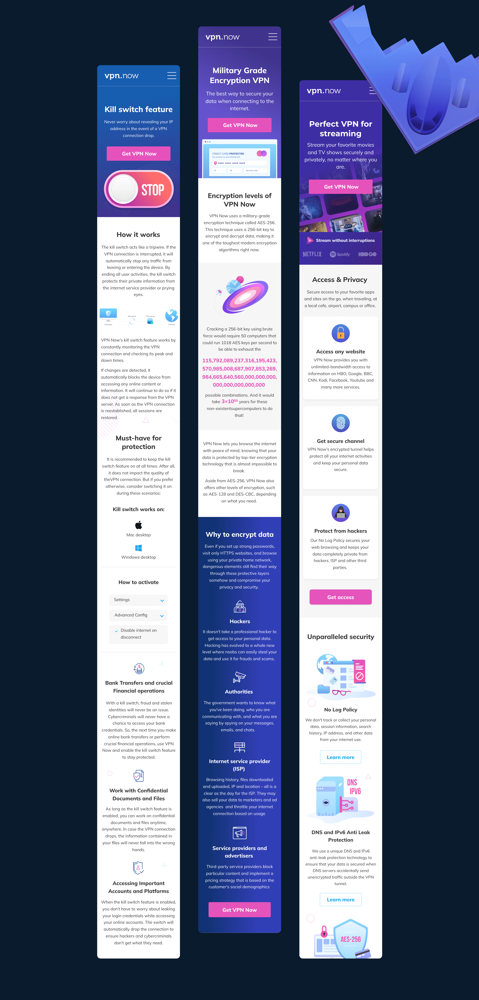
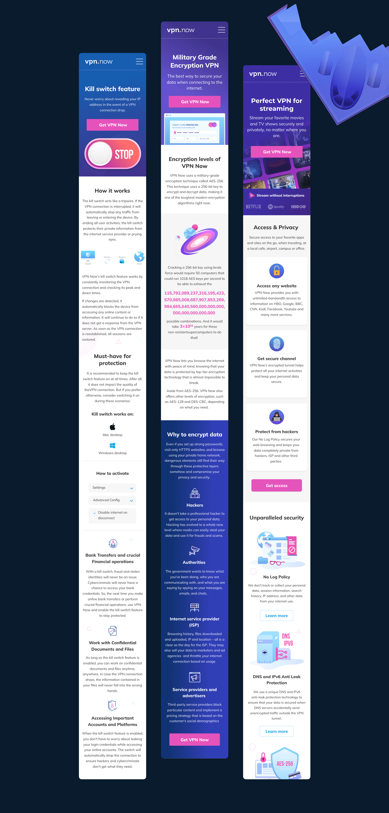

VPN App
About
VPN client and accompanying website.Research for MVP solution
As part of our company, we conducted a survey of employees (as well as friends and acquaintances) from different countries:- «Do you use a VPN and how often?»
- «If yes, what do you use a VPN for?»
- «What functionality do you use?»
Of the more than 150 people surveyed, 90% used a VPN. The frequency of use varied, but the most popular answer was «rarely, in order to access a blocked resource.» Based on other responses, it was clear that most of the respondents simply clicked the Connect button. This corresponded to the competitors’ research — in most cases, the main window of the program looked quite simple, and the paid functionality was hidden either behind the button itself (that is, there was no free version or it was a trial version), or behind additional paid servers.

Application Design
As part of this project, I designer the main screen of the application, as the most key, based on the research. The style of the program, sketches, animations and the final version of the main screen were prepared. Further development of the application, rendering of additional application screens (settings, etc.) were transferred to another designer to optimize the load.
An additional convenience of such a layout is that the design is easy to adapt to any platform.
Additional research
Based on the survey, we realized that for a large number of users, free access to a single server is enough, which can open access to a blocked resource. Therefore, we conducted additional research on the network (trends, competitors) to find other user pains. This would solve two problems:- Focus on users who need specific requirements and features.
- Draw users’ attention to features they hadn’t thought of before.
Website design
During the preparation of the website, we decided to focus on the user pains that we found in the research above. We also tried to present the material in such a way that users who did not think about it before thought about the benefits and additional features, in addition to the basic scenario of using a VPN. In terms of style, we decided to start from the app, preparing also colorful illustrations to make the content easier to read.
 





 

Results
The website performed well when running targeted ads, and it also indexed well due to the large amount of text. Analysis of the heat map and user behavior indicated that our hypotheses turned out to be correct — people read text blocks and followed internal links, studying the information, as well as that the CTA elements were correctly placed.
Во During the brainstorming, the idea was born that it is possible to make the independent service with the rating and rating of VPN applications..